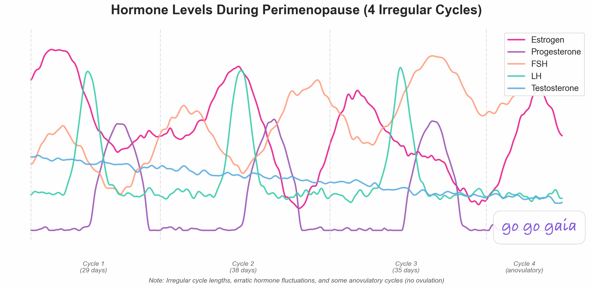

Best Perimenopause Tracking App 2026: 8 Apps Compared
Quick Answer: Which App Fits Your Perimenopause?
For a menopause-specific app: Balance. For free CBT-style tools: Health & Her. For a perimenopause mode in a cycle tracker: Clue. For structured CBT programs: Caria. For community: Perry. For staying in a tracker you already use: Flo. For tracking symptoms alongside sleep, nutrition and wearable data: Veya.
- Dedicated menopause app: Balance. Founded by Dr. Louise Newson; its listing says ORCHA-certified
- Free menopause toolkit: Health & Her. CBT exercises, pelvic floor training, meditation
- Perimenopause mode in a cycle tracker: Clue. Part of Clue Plus
- Symptoms alongside sleep, nutrition and wearable data: Veya. Keeps tracking through irregular and skipped cycles and links symptoms to sleep, diet, and activity. Free to download; Pro adds Ask Veya, doctor-report export and unlimited habits and symptoms
- Structured CBT programs: Caria. Tested in a 6-week randomized trial
- Existing Flo users: Flo. Perimenopause Score and Menopause Timeline
- Clinical access: Midday. We couldn't confirm it's currently available
- Community support: Perry. Groups, expert events, courses

Your period used to show up like clockwork. Now it's 24 days, then 45, then nothing for two months. Add hot flashes, brain fog, and nights where you wake up drenched in sweat, and you've got perimenopause. The right tracking app can help you make sense of it.
How We Picked These Apps
We shortlisted the 8 apps compared below from what women actually use for getting through the perimenopause transition, and compared them on the criteria that matter most here: how well they handle irregular or skipped cycles, the breadth of symptom tracking (hot flashes, night sweats, brain fog, and more), HRT/medication logging, and community or clinical support. Pricing was re-verified on the App Store in October 2026, and we checked each app's App Store listing rather than relying on third-party summaries.
Full disclosure: this site is published by Holland Neurotech Inc., the maker of Veya. The list isn't ranked — each app is presented as the fit for a specific need — we include our own app only where it genuinely belongs, and we say plainly when a competitor is the better choice.
The NHS says menopause and perimenopause symptoms usually last 7 to 9 years, sometimes longer. That's a long time to feel like your body is making up new rules every month. And most period trackers? They were built for regular 28-day cycles, not the unpredictable hormonal shifts of the menopause transition.
This guide compares 8 apps on what actually matters for perimenopause: handling irregular cycles, tracking the full range of symptoms, logging HRT and medications, and giving you data you can bring to a doctor who might otherwise put it down to stress.
One scope note: if you're in early perimenopause and still tracking fertility — whether trying to conceive or avoiding pregnancy — you'll want BBT, LH testing, and cervical mucus features alongside symptom tracking. Our best fertility tracking apps comparison covers that side in depth; this guide focuses on the transition itself.
Full Transparency
This guide is published by Holland Neurotech Inc., the company behind Veya. We've compared each app based on its actual perimenopause-relevant features, recent user reviews, and publicly available information. Every app here has real strengths, and the best one for you depends on your specific situation.
Our goal is to help you make an informed decision, whether that leads you to Veya or another app that better fits your needs.
Educational content, not medical advice. For personal concerns, please consult your doctor.
What should a perimenopause tracking app actually do?
Tracking perimenopause is different from tracking a regular cycle. Here's what to look for in an app:
Irregular Cycle Handling
This is the biggest deal-breaker. During perimenopause, periods may become irregular: longer, shorter, heavier, lighter or skipped, sometimes within the same year. An app that panics when you skip a period or insists on predicting your next one based on averages won't cut it. You need something that tracks what's actually happening, not what a 28-day template says should be happening.
Symptom Breadth
Hot flashes get all the attention, but perimenopause involves a long list of possible symptoms. Night sweats, brain fog, mood changes, sleep disruption, vaginal dryness, joint pain, weight changes, anxiety, heart palpitations, and more. A good app lets you track a wide range of these, not just the obvious ones.
HRT and Medication Tracking
Some women start hormone replacement therapy (HRT) during perimenopause. Noting when you started, what you were prescribed, and how your symptoms respond over time gives you something to discuss with your doctor. The same goes for any supplements you take.
Pattern Recognition Over Time
Perimenopause symptoms change over months and years, not days. An app that shows you weekly or daily snapshots won't reveal the bigger picture. You need something that helps you spot trends over longer periods: "I logged 8 hot flashes a week in January and 3 a week in March."
Data for Doctor Appointments
Some women find perimenopause symptoms hard to get taken seriously at appointments. Walking in with tracked data, specific symptom counts, patterns over time, and medication notes gives you something concrete to talk through with your clinician.
Wearable Integration
Wearables can capture sleep, temperature and heart rate data automatically. These are general wellness readings, not a way to diagnose perimenopause or any condition. If you already wear an Apple Watch, Oura Ring, or Garmin, an app that pulls in that data saves you from manually logging things you're already tracking.
Which perimenopause apps fit which needs?
For Dedicated Menopause Support: Balance
Best if you want: A menopause-specific app founded by a menopause specialist, with a free core.
Key Features
- Founded by Dr. Louise Newson, a UK menopause specialist
- Symptom and period tracking
- Downloadable Health Report to take to a healthcare appointment (free, per its listing)
- Community section and community experiments
- Mood and sleep-quality monitoring
- Evidence-based expert articles
- balance+ premium with live sessions, recipe videos, pilates, yoga and guided meditation
Strengths
- Its App Store listing says it is ORCHA-certified and an Apple Editors' Choice Award winner
- Rated 4.7 on the App Store (listing, as of October 2026)
- Free core app with symptom tracking, articles and the Health Report
- Clinical backing from its specialist founder
Limitations
- Its listing doesn't mention wearable integration, so data from an Apple Watch or Garmin would need to be logged separately
- No nutrition or fitness tracking is described in the listing
- The listing mentions community experiments, but not personal correlation analysis of what triggers your symptoms
Who Should Choose This
Balance is ideal if you:
- Want a menopause-specific app with a specialist founder
- Value expert educational content alongside tracking
- Want a Health Report to bring to your doctor
- Need Android support
Pricing: Free (core). balance+ premium is listed on the App Store at roughly $4–$11 per month and $50–$99 per year (as of October 2026); regional offers vary.
Download: Available on iOS and Android
For Free Menopause Tools: Health & Her
Best if you want: A free toolkit with CBT exercises, pelvic floor training, and meditation alongside symptom tracking.
Key Features
- Calendar and tracker for logging symptoms like low mood, skin changes and energy dips
- Interactive CBT exercises
- Pelvic floor training
- Sleep meditation and muscle relaxation audio
- Deep breathing exercises
- Custom plans with daily reminders, including supplement and HT reminders
- Optional cycle predictions, including tracking perimenopausal cycle changes
- Expert articles and videos from UK experts
Strengths
- No in-app purchases listed on the App Store (as of October 2026)
- Goes beyond tracking into active symptom management (CBT, pelvic floor, meditation)
- Its listing says the app is reviewed by Dr Harriet Connell
- Covers cycles, hormonal contraception, HT, perimenopause, menopause and post-menopause in one app
- Cross-platform (iOS and Android)
Limitations
- UK-centric expert network
- Includes a shop section of self-care products, worth keeping in mind when weighing any product suggestions
- Wearable integration isn't mentioned in its listing
- No nutrition or fitness tracking is described in the listing
Who Should Choose This
Health & Her is ideal if you:
- Want more than just tracking. You want tools to actively manage symptoms
- Want a free app
- Are interested in CBT, pelvic floor training, or guided meditation
- Need Android support
Pricing: Free; no in-app purchases listed on the App Store (as of October 2026).
Download: Available on iOS and Android
For Science-Backed Cycle Tracking: Clue
Best if you want: A perimenopause mode inside a cycle tracker you may already use, from a Berlin-based company.
Key Features
- Dedicated Clue Perimenopause mode, one of the modes you can switch between in the app (period tracking, trying to conceive, pregnancy, perimenopause)
- Dedicated tracking options for common perimenopause experiences (hot flashes, night sweats, brain fog), plus custom tags you can create
- Perimenopause articles and insights written by a team of medical and science experts, per Clue
- Wearable connections listed for Apple Watch, Oura, WHOOP, Withings and Fitbit
Strengths
- Perimenopause mode is built around changing cycles rather than "your period is X days late" messaging
- Headquartered in Berlin, so data is covered by GDPR, per its listing
- Wearable connections for temperature, sleep and heart rate data
- Clean, minimal interface
- Cross-platform (iOS and Android)
Limitations
- Perimenopause mode is part of Clue Plus, so it needs a subscription
- Less menopause education than dedicated apps like Balance
- No nutrition, fitness, or habit tracking is described in the listing
Who Should Choose This
Clue is ideal if you:
- Want a tracker with a dedicated perimenopause mode
- Prioritize data privacy
- Already use Clue and want to continue as you enter perimenopause
- Use an Oura Ring or other supported wearable
Pricing: Free (basic). Clue Plus is listed on the App Store at $39.99 per year or $9.99 per month (as of October 2026).
Download: Available on iOS and Android
For Perimenopause Tracking Alongside Sleep, Nutrition and Wearable Data: Veya
Best if you want: One app that keeps working when your cycle turns irregular, tracks perimenopause symptoms like hot flashes, and shows how sleep, diet, and exercise connect to your symptoms, mood, and energy. Core tracking is free.
If you want mood and symptoms tracked alongside your cycle, see our guide to all-in-one cycle, mood & symptom tracking.
Key Features
- Handles irregular and missing cycles without breaking
- Perimenopause and menopause tracking, including hot flashes, night sweats, brain fog, mood shifts and sleep disruption
- Nutrition and fitness tracking alongside symptoms
- Pattern insights and correlations showing which lifestyle factors line up with YOUR symptoms (free, per the listing)
- Wearable integration (Apple Watch, Oura Ring, Garmin) for automatic sleep and other wearable data
- Medication and supplement tracking, including HRT
- Pro: Ask Veya (AI answers based on your history), doctor-report export, and unlimited habit and symptom tracking
Strengths
- Tracks symptoms, nutrition, fitness, mood, sleep, and cycle in one app that is free to download
- Correlation insights can show connections like "your hot flashes are worse on weeks with less exercise" or "your sleep improves when you limit caffeine after 2pm"
- Wearable data brings sleep disruption in automatically
- Its listing states "No ads. No selling your data."
Limitations
- iOS only. No Android version yet
- Newer app with a smaller community of perimenopause users
- Ask Veya, doctor-report export and unlimited habit and symptom tracking require Pro ($9.99/month or $49.99/year)
- Not menopause-first. It's an all-in-one health app with perimenopause support, not a dedicated menopause app
Who Should Choose This
Veya is a good fit if you:
- Want to understand how diet, exercise, sleep, and stress line up with your perimenopause symptoms
- Track with a wearable and want that data connected to your symptoms
- Want one app instead of juggling a menopause app, a fitness app, and a nutrition app
- Want to bring organized data to your doctor
Pricing: Free to download. Pro is $9.99/month or $49.99/year (as of October 2026) and adds Ask Veya, doctor-report export and unlimited habits and symptoms. For a closer look at what the app tracks for perimenopause specifically, see our perimenopause tracking features.
Download: Available on iOS App Store
For Evidence-Based Coaching: Caria
Best if you want: Structured CBT-based programs from an app that has been tested in a published randomized trial.
Key Features
- Programs drawing on CBT, nutritional therapy, mindfulness and fitness
- Symptom and daily activity tracking, with Siri Shortcuts logging
- Personalized tips based on your logs
- Audio courses and quick-relief audio exercises
- Recipes and meal plans
- Community discussions
Strengths
- A 6-week randomized trial of 149 women (JMIR mHealth and uHealth, June 2025) reported lower hot flash severity in the app group than in a web-education control group. The outcomes were self-reported and the study was short, so it's one data point rather than a verdict
- Focuses on what to DO about your symptoms, not just logging them
- Behavioral tools, not just tracking
- Cross-platform (iOS and Android)
Limitations
- Full programs are part of Caria Premium, a paid subscription
- Wearable integration isn't mentioned in its listing
- Nutrition support is meal plans and recipes rather than food logging
Who Should Choose This
Caria is ideal if you:
- Want guidance on managing symptoms, not just tracking them
- Value CBT-based tools for hot flashes, sleep, and mood
- Want a coaching-style experience with structured programs
- Are willing to pay for a premium subscription
Pricing: Free (basic). Caria Premium is listed on the App Store at $5.99 per month or $47.99 per year in its in-app purchase list (as of October 2026); the listing's description text quotes $9.99 per month or $49.99 per year, so check the price in the app before you subscribe.
Download: Available on iOS and Android
For Existing Flo Users Entering Perimenopause: Flo
Best if you want: To stay in the app you already know, with perimenopause-specific features.
Key Features
- "Flo for Perimenopause," announced July 17, 2025
- Perimenopause Score to follow symptom changes, which Flo says was developed by its science and medical teams
- Menopause Timeline to understand the perimenopause phases
- Tracker for sleep, energy, mood and well-being changes
- Period tracking that shows a window of time for irregular cycles instead of an exact date
- Expert content created with Flo's team of 100+ medical experts, per Flo
Strengths
- Large user base: its App Store listing cites over 570 million downloads worldwide. If you've tracked your period with Flo for years, you don't have to start over
- The Perimenopause Score gives you a way to follow how symptoms change over time
- Large content library
- Anonymous Mode, which lets you use the app without personal identifiers linked to your health data
- Cross-platform (iOS and Android)
Limitations
- Some perimenopause features may sit behind Flo Premium
- Built on top of a period tracking app, not designed menopause-first
- Privacy history: see the legal details in the privacy section below
- No nutrition, fitness, or habit tracking is described in the listing
Who Should Choose This
Flo is ideal if you:
- Already use Flo and don't want to start over with a new app
- Want the Perimenopause Score to follow your symptoms
- Value a large community and educational content library
- Are comfortable with Flo's data practices (or willing to use Anonymous Mode)
Pricing: Free (basic). Flo Premium annual plans are listed on the App Store at around $44–$60 per year, with monthly options such as $11.49 (as of October 2026); offers vary.
Download: Available on iOS and Android
For Clinical Access: Midday
Best if you want: A menopause app positioned around access to clinical care. We couldn't confirm that it is currently available, so check before counting on it.
Limitations
- We found no current US App Store listing in October 2026, so we can't link one, confirm it's live, or describe its current features
- We couldn't find a privacy policy to review
Who Should Choose This
Midday may be worth a look if you:
- Want clinical support through an app, and can confirm it's offered where you live
Pricing: Check the company's website.
Availability: joinmidday.com (we couldn't confirm an App Store listing as of October 2026)
For Community Support: Perry
Best if you want: A supportive community of women going through perimenopause and menopause, with expert events and courses.
Key Features
- Groups on specific perimenopause and menopause topics, with group and direct chat
- Live events with menopause experts
- Courses and tutorials by a panel of menopause experts
- Perry Journal, a private space to write that its release notes say involves no symptom tracking or health data
Strengths
- Community-first design that works like a peer support group
- Free to download
- Regular expert events and educational content
- Good for the emotional side of perimenopause, not just the physical
- Cross-platform (iOS and Android)
Limitations
- Community-focused rather than a tracking tool: its App Store listing describes groups, courses and events, not symptom or cycle tracking
- No wearable integration is described in the listing
- No nutrition or fitness tracking is described in the listing
Who Should Choose This
Perry is ideal if you:
- Feel isolated in your perimenopause experience and want peer support
- Want access to live expert events and educational courses
- Value community as much as (or more than) data tracking
- Want a free-to-download app with a supportive environment
Pricing: Free to download. A subscription is listed on the App Store at $7.99 per month or $79.00 per year (as of October 2026).
Download: Available on iOS and Android
Feature Comparison Table
Here's how the 8 apps compare on features that matter for perimenopause. The table reflects each app's App Store listing and public information as of October 2026; a cross means a feature isn't described there, and "Unconfirmed" means we couldn't verify the app's current details.
| Feature | Veya | Balance | Health & Her | Caria | Flo | Clue | Midday | Perry |
|---|---|---|---|---|---|---|---|---|
| Handles Irregular/Missing Cycles | ✅ | ⚠️ Basic | ⚠️ Basic | ⚠️ Basic | ✅ Perimenopause mode | ✅ Perimenopause mode | Unconfirmed | Not listed |
| Hot Flash Tracking | ✅ Free | ✅ Free | ✅ Free | ✅ Free | ✅ Premium | ✅ Premium | Unconfirmed | Not listed |
| Night Sweat Tracking | ✅ Free | ✅ Free | ✅ Free | ✅ Free | ✅ Premium | ✅ Premium | Unconfirmed | Not listed |
| Brain Fog / Cognitive Tracking | ✅ Free | ✅ Free | ⚠️ Basic | ✅ Free | ⚠️ Basic | ✅ Premium | Unconfirmed | Not listed |
| HRT / Medication Tracking | ✅ Free | ⚠️ Basic | ❌ | ❌ | ❌ | ⚠️ Basic (Premium) | Unconfirmed | ❌ |
| Nutrition Tracking | ✅ Free | ❌ | ❌ | ⚠️ Guidance only | ❌ | ❌ | Unconfirmed | ❌ |
| Fitness Tracking | ✅ Free | ❌ | ❌ | ⚠️ Sessions | ❌ | ❌ | Unconfirmed | ❌ |
| Correlation Insights | ✅ Multi-factor | ❌ | ❌ | ❌ | ⚠️ Basic (Premium) | ❌ | Unconfirmed | ❌ |
| Wearable Integration | ✅ Apple Watch, Oura, Garmin | ❌ | ❌ | ❌ | ❌ | ✅ Apple Watch, Oura, WHOOP, others | Unconfirmed | ❌ |
| Sleep Tracking | ✅ Free | ✅ Free | ✅ Meditation | ✅ Free | ⚠️ Basic | ⚠️ Basic | Unconfirmed | Not listed |
| Doctor Data Export / Health Report | ✅ Pro | ✅ Health Report | ❌ | ❌ | ⚠️ Limited | ⚠️ Limited | Unconfirmed | ❌ |
| CBT / Therapeutic Tools | ❌ | ❌ | ✅ Free | ✅ Premium | ❌ | ❌ | Unconfirmed | ❌ |
| Educational Content | ⚠️ Basic | ✅ Expert-written | ✅ Specialist content | ✅ Expert sessions | ✅ Large library | ✅ Science-backed | Unconfirmed | ✅ Expert events |
| Community / Forums | ❌ | ✅ Forum | ❌ | ✅ Forum | ✅ Large community | ❌ | Unconfirmed | ✅ Strong community |
| Privacy Practices | No ads, no data selling (listing) | UK-based | UK-based | Not assessed | ⚠️ FTC order (2021); class settlement pending | Berlin-based, GDPR | Unconfirmed | Not assessed |
| Free Tier Quality | ✅ Core tracking free | ✅ Good | ✅ Fully free | ⚠️ Limited | ⚠️ Limited | ⚠️ Perimenopause = paid | Unconfirmed | ✅ Free to download |
| Platforms | iOS only | iOS + Android | iOS + Android | iOS + Android | iOS + Android | iOS + Android | Unconfirmed | iOS + Android |
| Best For | All-in-one tracking | Dedicated menopause | Free tools & CBT | Evidence-based coaching | Existing Flo users | Science-backed cycles | Clinical access | Community |
Which perimenopause app should you choose?
Here's the bottom line for each app:
Choose Balance if:
- You want a dedicated menopause app from a menopause specialist
- You value a specialist founder and clinical backing
- You want a Health Report to bring to your doctor
- Expert-led educational content matters to you
Choose Health & Her if:
- You want a free app
- You want active symptom management tools (CBT, pelvic floor training, meditation)
- You want more than just tracking. You want to DO something about your symptoms
Choose Caria if:
- You want structured coaching programs that have been tested in a published randomized trial
- You're looking for CBT-based tools to manage hot flashes, mood, and sleep
- You want guidance, not just a place to log symptoms
Choose Flo if:
- You've tracked your period with Flo for years and don't want to start over
- You want the Perimenopause Score to follow your symptoms
- You value a large community and educational content library
- You're comfortable with Flo's data practices
Choose Clue if:
- Privacy matters a lot to you and you like a Berlin-based, GDPR-covered company
- You want a tracker with a dedicated perimenopause mode
- You prefer a clean, minimal interface
- You use an Oura Ring or another wearable Clue supports
Choose Midday if:
- You want clinical support through an app and can confirm it's available where you live
Choose Perry if:
- You want a community of women going through the same experience
- Expert-led live events and courses matter to you
- You value the emotional and social side of the transition as much as the physical
Choose Veya if:
- You want to track symptoms, nutrition, fitness, mood, and cycle in one app
- You want to see how your lifestyle lines up with your symptoms
- You track with a wearable (Apple Watch, Oura, Garmin)
- You want to bring organized data to your doctor
- You'd rather have one app than three
How do these apps handle your data?
Perimenopause data is deeply personal: symptom patterns, HRT use, mood changes, fertility status. Here's what we could verify about each app:
- Veya: its App Store listing states "No ads. No selling your data."
- Clue: headquartered in Berlin, and its listing says data is protected by European privacy law (GDPR).
- Balance and Health & Her: both are UK-based companies, so UK data protection law applies. We didn't find public data-sharing controversies for either, but we haven't audited their policies.
- Caria and Perry: we didn't find public data-sharing controversies, but we haven't audited their policies. Read each privacy policy before you log health data.
- Flo has a documented privacy history. In 2021 the FTC finalized an order after alleging that Flo shared health data with outside analytics firms, including Facebook and Google, after promising to keep it private. Separately, in the class action Frasco v. Flo Health, $59.5 million in proposed settlements with Flo, Google and Flurry received preliminary approval in April 2026, and the court-approved notice sets the final approval hearing for October 29, 2026. Meta did not settle, and a jury found Meta liable on August 1, 2025. Flo has since added Anonymous Mode, per its App Store listing.
- Midday: we couldn't find a current listing or privacy policy to review, so we can't say how it handles data.
How do you get the most out of perimenopause tracking?
Whichever app you choose, here's how to make it actually useful:
- Give it a few months. Perimenopause patterns emerge slowly, so a couple of weeks of logs rarely shows much. Consistency matters more than detail.
- Log more than hot flashes. Mood, sleep, brain fog, joint pain, anxiety: they all matter. The symptoms you think are unrelated may turn out to be connected.
- Note your triggers. Caffeine, alcohol, stress, poor sleep. Tracking what happened BEFORE a symptom is just as important as logging the symptom itself.
- Track HRT and supplements if you're taking them. This is how you see whether they're actually helping over time. "I feel better" is less specific than "my weekly hot flash count dropped from 12 to 4 after I started the treatment my doctor prescribed."
- Bring your data to your doctor. Several months of tracked symptoms, patterns, and medication notes gives your healthcare provider something concrete to work with.
- Be patient. The NHS says symptoms usually last 7 to 9 years, sometimes longer. Your symptoms will change. Your tracking needs will change. That's normal. Start simple and adjust as you go.
Pro Tip
If you're not sure which app to start with, pick one that covers your biggest need. If you want symptom management tools, try Health & Her or Caria. If you want to see how lifestyle lines up with your symptoms, try an app with correlation features. If community matters most, try Perry. You can always switch later.
Frequently Asked Questions
What should I look for in a perimenopause tracking app?
Look for an app that handles irregular or missing cycles without breaking, tracks a wide range of perimenopause symptoms (not just hot flashes), supports HRT or medication tracking, shows patterns over months (not just days), and lets you export data for doctor appointments. Wearable integration is a bonus for capturing temperature shifts and sleep disruption automatically.
Can period tracker apps handle perimenopause?
Some can, but results vary. Standard period trackers predict your next cycle based on past regularity, and during perimenopause cycles can get longer, shorter or skip. Clue and Flo both offer perimenopause features (Clue has a dedicated Perimenopause mode; Flo has Flo for Perimenopause). Others, like Balance and Health & Her, were built for the menopause transition.
Is there a free perimenopause app?
Yes, several are free to download. Health & Her has no in-app purchases listed on the App Store and includes CBT exercises, pelvic floor training, and meditation alongside symptom tracking. Balance offers a free tier with symptom tracking and educational content. Veya's core tracking is free, including perimenopause symptom tracking, nutrition logging, fitness tracking, and wearable integration; Pro adds Ask Veya, doctor-report export and unlimited habits and symptoms. Perry is free to download with community access.
What's the difference between a menopause app and a period tracker?
Period trackers focus on predicting your next cycle and fertile window. Menopause apps focus on tracking symptoms like hot flashes, night sweats, brain fog, and mood changes. They also often include HRT tracking, educational content about hormone changes, and tools for doctor conversations. During perimenopause, you may need features from both categories, since your period is still happening (unpredictably) while menopause symptoms are starting.
How can tracking help me manage perimenopause symptoms?
Tracking can reveal patterns you'd miss on your own. You might notice that your hot flashes cluster after alcohol, that your brain fog eases on days you exercise, or that a supplement seems to line up with fewer symptoms. This data can be useful at doctor appointments, since it gives you something specific to talk through. A few months of consistent tracking gives both you and your healthcare provider more to work with.
Should I track perimenopause with a wearable?
It can help. Wearables automatically capture sleep, temperature and heart rate data, and sleep disruption is hard to self-report accurately. These are general wellness readings, not a way to diagnose perimenopause or any condition. If you already own an Apple Watch, Oura Ring, or Garmin, look for an app that syncs with your device so you don't have to log that data manually.
How does the Flo app compare to other menopause apps in features and price?
Flo announced a dedicated perimenopause offering (Flo for Perimenopause, July 17, 2025) that includes a Perimenopause Score and a Menopause Timeline. On the App Store (as of October 2026), Flo Premium annual plans are listed at around $44 to $60 per year, Clue Plus at $39.99 per year, and balance+ from $49.99 per year up to around $99 depending on the offer. Where dedicated menopause apps like Balance, Health & Her, and Caria go further is in active symptom management such as CBT exercises, pelvic floor training, and education, rather than cycle prediction. Flo's main advantage is familiarity if you already use it, not menopause-specific depth.
Is Flo's menopause tracking better than competitors?
It depends what you need. Flo's perimenopause features are newer (announced July 2025) and sit inside the app most people already know, which is the main reason to stay with it. Apps built specifically for the menopause transition, such as Balance and Health & Her, offer symptom-management tools and menopause-focused content. Clue's perimenopause mode is another option inside a cycle tracker. There is no single winner, so the right choice depends on whether you want familiarity, active symptom tools, or specialist content.
Which perimenopause app is best for hot flash tracking, Clue or Ovia?
Both list perimenopause support. Clue has a dedicated Perimenopause mode, part of Clue Plus, with tracking options for common perimenopause experiences plus custom tags, and its listing says it connects with wearables including Oura. Ovia's App Store listing describes perimenopause and menopause support with symptom and mood tracking inside a broader app that also covers fertility and pregnancy. Which one fits depends on whether you want a dedicated mode or one app across life stages. If hot flash and night sweat patterns are your priority, also consider Health & Her for its CBT tools, or an all-in-one tracker that logs them alongside sleep and triggers.
Does Flo support wearables like Fitbit or Apple Watch for perimenopause tracking?
Flo's App Store listing doesn't describe Fitbit or Apple Watch syncing, so check the app's settings before relying on it. Clue's listing says it connects with Apple Watch, Oura, WHOOP, Withings and Fitbit, and Veya syncs with Apple Watch, Oura Ring, and Garmin. Automatic sleep and temperature data can be useful context as cycles become irregular.
Which perimenopause app should I buy in 2026 if I want something comparable to Flo?
If you like Flo's familiar, all-in-one approach but want more perimenopause-specific tools, options include Clue (dedicated perimenopause mode in Clue Plus, listed at $39.99 per year as of October 2026) and Balance (a menopause-specific app with a free tier plus balance+ premium from $49.99 per year). For an all-in-one option that tracks perimenopause symptoms alongside sleep, nutrition, and wearable data, Veya's core tracking is free, with Pro at $9.99 per month or $49.99 per year. Match the app to your main goal: familiarity, privacy, specialist content, or breadth.
Which perimenopause app is best for sleep tracking?
Sleep problems are a commonly reported perimenopause symptom and hard to self-report accurately, so wearable-connected apps can help. Apps that sync with an Apple Watch, Oura Ring, or Garmin can capture sleep automatically rather than relying on manual logs. Veya pulls sleep data from those wearables and shows how it lines up with symptoms like hot flashes and mood. If you prefer guided tools, Health & Her includes sleep meditation and relaxation audio alongside its symptom tracking.
Final Thoughts
There's no single "best" perimenopause app, because perimenopause itself looks different for everyone. Some women mostly deal with hot flashes and night sweats. Others struggle more with brain fog, anxiety, or sleep disruption. What matters is finding a tracker that handles YOUR symptoms and helps you see patterns over time.
If you want a dedicated menopause app with clinical backing, Balance is one to try. If you want free tools to actively manage symptoms (CBT, pelvic floor, meditation), Health & Her is worth a look. If you want structured programs that have been tested in a randomized trial, Caria is worth a look. If you've used Flo for years, its perimenopause features let you stay in a familiar app. If a perimenopause mode in a privacy-minded cycle tracker appeals, try Clue. If you want specialist access, check whether Midday is available to you. If community support matters, Perry does that well. And if you want to track symptoms, nutrition, fitness, mood, and sleep alongside each other and see how they line up with your symptoms, Veya is built for that, with core tracking free and Pro adding Ask Veya, doctor-report export and unlimited habits and symptoms.
The most important thing? Start tracking. Perimenopause can last years, and the data you collect now gives you and your doctor more to work with down the road.
Related Articles
- Perimenopause Guide: Symptoms, Stages & What to Expect
- Menopause Guide: What Happens After Perimenopause
- Best Period Tracker App 2026: Clue vs Flo vs Ovia (6 Apps Compared)
- Best PCOS Tracking App 2026: 7 Apps Compared
Other App Comparisons
- Best Period Tracker App 2026: 6 Apps Compared
- Best Symptom Tracker App for Women 2026: 5 Apps Compared
- Best Endometriosis App 2026: 7 Apps Compared
- Clue vs Flo: Which Period Tracker Is Better?
- Best Pregnancy App 2026: 6 Apps Compared
- Best Fertility Tracking Apps 2026: 8 Compared for TTC
Ready to Track Your Perimenopause?
If Veya sounds like the right fit, with all-in-one perimenopause tracking, correlation insights, and wearable integration, download it free and give it a try.